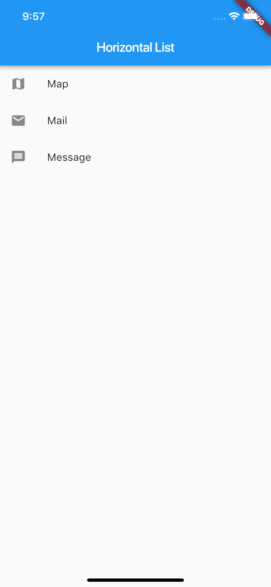

- 00 开篇词 为什么每一位大前端从业者都应该学习Flutter？.md.html
- 01 预习篇 · 从0开始搭建Flutter工程环境.md.html
- 02 预习篇 · Dart语言概览.md.html
- 03 深入理解跨平台方案的历史发展逻辑.md.html
- 04 Flutter区别于其他方案的关键技术是什么？.md.html
- 05 从标准模板入手，体会Flutter代码是如何运行在原生系统上的.md.html
- 06 基础语法与类型变量：Dart是如何表示信息的？.md.html
- 07 函数、类与运算符：Dart是如何处理信息的？.md.html
- 08 综合案例：掌握Dart核心特性.md.html
- 09 Widget，构建Flutter界面的基石.md.html
- 10 Widget中的State到底是什么？.md.html
- 11 提到生命周期，我们是在说什么？.md.html
- 12 经典控件（一）：文本、图片和按钮在Flutter中怎么用？.md.html
- 13 经典控件（二）：UITableView_ListView在Flutter中是什么？.md.html
- 14 经典布局：如何定义子控件在父容器中排版的位置？.md.html
- 15 组合与自绘，我该选用何种方式自定义Widget？.md.html
- 16 从夜间模式说起，如何定制不同风格的App主题？.md.html
- 17 依赖管理（一）：图片、配置和字体在Flutter中怎么用？.md.html
- 18 依赖管理（二）：第三方组件库在Flutter中要如何管理？.md.html
- 19 用户交互事件该如何响应？.md.html
- 20 关于跨组件传递数据，你只需要记住这三招.md.html
- 21 路由与导航，Flutter是这样实现页面切换的.md.html
- 22 如何构造炫酷的动画效果？.md.html
- 23 单线程模型怎么保证UI运行流畅？.md.html
- 24 HTTP网络编程与JSON解析.md.html
- 25 本地存储与数据库的使用和优化.md.html
- 26 如何在Dart层兼容Android_iOS平台特定实现？（一）.md.html
- 27 如何在Dart层兼容Android_iOS平台特定实现？（二）.md.html
- 28 如何在原生应用中混编Flutter工程？.md.html
- 29 混合开发，该用何种方案管理导航栈？.md.html
- 30 为什么需要做状态管理，怎么做？.md.html
- 31 如何实现原生推送能力？.md.html
- 32 适配国际化，除了多语言我们还需要注意什么_.md.html
- 33 如何适配不同分辨率的手机屏幕？.md.html
- 34 如何理解Flutter的编译模式？.md.html
- 35 Hot Reload是怎么做到的？.md.html
- 36 如何通过工具链优化开发调试效率？.md.html
- 37 如何检测并优化Flutter App的整体性能表现？.md.html
- 38 如何通过自动化测试提高交付质量？.md.html
- 39 线上出现问题，该如何做好异常捕获与信息采集？.md.html
- 40 衡量Flutter App线上质量，我们需要关注这三个指标.md.html
- 41 组件化和平台化，该如何组织合理稳定的Flutter工程结构？.md.html
- 42 如何构建高效的Flutter App打包发布环境？.md.html
- 43 如何构建自己的Flutter混合开发框架（一）？.md.html
- 44 如何构建自己的Flutter混合开发框架（二）？.md.html
- 特别放送 温故而知新，与你说说专栏的那些思考题.md.html
- 结束语 勿畏难，勿轻略.md.html
- 捐赠
13 经典控件（二）：UITableView_ListView在Flutter中是什么？
你好，我是陈航。
在上一篇文章中，我和你一起学习了文本、图片和按钮这3大经典组件在Flutter中的使用方法，以及如何在实际开发中根据不同的场景，去自定义展示样式。
文本、图片和按钮这些基本元素，需要进行排列组合，才能构成我们看到的UI视图。那么，当这些基本元素的排列布局超过屏幕显示尺寸（即超过一屏）时，我们就需要引入列表控件来展示视图的完整内容，并根据元素的多少进行自适应滚动展示。
这样的需求，在Android中是由ListView或RecyclerView实现的，在iOS中是用UITableView实现的；而在Flutter中，实现这种需求的则是列表控件ListView。
ListView
在Flutter中，ListView可以沿一个方向（垂直或水平方向）来排列其所有子Widget，因此常被用于需要展示一组连续视图元素的场景，比如通信录、优惠券、商家列表等。
我们先来看看ListView怎么用。ListView提供了一个默认构造函数ListView，我们可以通过设置它的children参数，很方便地将所有的子Widget包含到ListView中。
不过，这种创建方式要求提前将所有子Widget一次性创建好，而不是等到它们真正在屏幕上需要显示时才创建，所以有一个很明显的缺点，就是性能不好。因此，这种方式仅适用于列表中含有少量元素的场景。
如下所示，我定义了一组列表项组件，并将它们放在了垂直滚动的ListView中：
ListView(
children: <Widget>[
//设置ListTile组件的标题与图标
ListTile(leading: Icon(Icons.map), title: Text('Map')),
ListTile(leading: Icon(Icons.mail), title: Text('Mail')),
ListTile(leading: Icon(Icons.message), title: Text('Message')),
]);
备注：ListTile是Flutter提供的用于快速构建列表项元素的一个小组件单元，用于1~3行（leading、title、subtitle）展示文本、图标等视图元素的场景，通常与ListView配合使用。- 上面这段代码中用到ListTile，是为了演示ListView的能力。关于ListTile的具体使用细节，并不是本篇文章的重点，如果你想深入了解的话，可以参考官方文档。
运行效果，如下图所示：

图1 ListView默认构造函数
除了默认的垂直方向布局外，ListView还可以通过设置scrollDirection参数支持水平方向布局。如下所示，我定义了一组不同颜色背景的组件，将它们的宽度设置为140，并包在了水平布局的ListView中，让它们可以横向滚动：
ListView(
scrollDirection: Axis.horizontal,
itemExtent: 140, //item延展尺寸(宽度)
children: <Widget>[
Container(color: Colors.black),
Container(color: Colors.red),
Container(color: Colors.blue),
Container(color: Colors.green),
Container(color: Colors.yellow),
Container(color: Colors.orange),
]);
运行效果，如下图所示：
图2 水平滚动的ListView
在这个例子中，我们一次性创建了6个子Widget。但从图2的运行效果可以看到，由于屏幕的宽高有限，同一时间用户只能看到3个Widget。也就是说，是否一次性提前构建出所有要展示的子Widget，与用户而言并没有什么视觉上的差异。
所以，考虑到创建子Widget产生的性能问题，更好的方法是抽象出创建子Widget的方法，交由ListView统一管理，在真正需要展示该子Widget时再去创建。
ListView的另一个构造函数ListView.builder，则适用于子Widget比较多的场景。这个构造函数有两个关键参数：
- itemBuilder，是列表项的创建方法。当列表滚动到相应位置时，ListView会调用该方法创建对应的子Widget。
- itemCount，表示列表项的数量，如果为空，则表示ListView为无限列表。
同样地，我通过一个案例，与你说明itemBuilder与itemCount这两个参数的具体用法。
我定义了一个拥有100个列表元素的ListView，在列表项的创建方法中，分别将index的值设置为ListTile的标题与子标题。比如，第一行列表项会展示title 0 body 0：
ListView.builder(
itemCount: 100, //元素个数
itemExtent: 50.0, //列表项高度
itemBuilder: (BuildContext context, int index) => ListTile(title: Text("title $index"), subtitle: Text("body $index"))
);
这里需要注意的是，itemExtent并不是一个必填参数。但，对于定高的列表项元素，我强烈建议你提前设置好这个参数的值。
因为如果这个参数为null，ListView会动态地根据子Widget创建完成的结果，决定自身的视图高度，以及子Widget在ListView中的相对位置。在滚动发生变化而列表项又很多时，这样的计算就会非常频繁。
但如果提前设置好itemExtent，ListView则可以提前计算好每一个列表项元素的相对位置，以及自身的视图高度，省去了无谓的计算。
因此，在ListView中，指定itemExtent比让子Widget自己决定自身高度会更高效。
运行这个示例，效果如下所示：
图3 ListView.builder构造函数
可能你已经发现了，我们的列表还缺少分割线。在ListView中，有两种方式支持分割线：
- 一种是，在itemBuilder中，根据index的值动态创建分割线，也就是将分割线视为列表项的一部分；
- 另一种是，使用ListView的另一个构造方法ListView.separated，单独设置分割线的样式。
第一种方式实际上是视图的组合，之前的分享中我们已经多次提及，对你来说应该已经比较熟悉了，这里我就不再过多地介绍了。接下来，我和你演示一下如何使用ListView.separated设置分割线。
与ListView.builder抽离出了子Widget的构建方法类似，ListView.separated抽离出了分割线的创建方法separatorBuilder，以便根据index设置不同样式的分割线。
如下所示，我针对index为偶数的场景，创建了绿色的分割线，而针对index为奇数的场景，创建了红色的分割线：
//使用ListView.separated设置分割线
ListView.separated(
itemCount: 100,
separatorBuilder: (BuildContext context, int index) => index %2 ==0? Divider(color: Colors.green) : Divider(color: Colors.red),//index为偶数，创建绿色分割线；index为奇数，则创建红色分割线
itemBuilder: (BuildContext context, int index) => ListTile(title: Text("title $index"), subtitle: Text("body $index"))//创建子Widget
)
运行效果，如下所示：
图4 ListView.separated构造函数
好了，我已经与你分享完了ListView的常见构造函数。接下来，我准备了一张表格，总结了ListView常见的构造方法及其适用场景，供你参考，以便理解与记忆：
图5 ListView常见的构造方法及其适用场景
CustomScrollView
好了，ListView实现了单一视图下可滚动Widget的交互模型，同时也包含了UI显示相关的控制逻辑和布局模型。但是，对于某些特殊交互场景，比如多个效果联动、嵌套滚动、精细滑动、视图跟随手势操作等，还需要嵌套多个ListView来实现。这时，各自视图的滚动和布局模型就是相互独立、分离的，就很难保证整个页面统一一致的滑动效果。
那么，Flutter是如何解决多ListView嵌套时，页面滑动效果不一致的问题的呢？
在Flutter中有一个专门的控件CustomScrollView，用来处理多个需要自定义滚动效果的Widget。在CustomScrollView中，这些彼此独立的、可滚动的Widget被统称为Sliver。
比如，ListView的Sliver实现为SliverList，AppBar的Sliver实现为SliverAppBar。这些Sliver不再维护各自的滚动状态，而是交由CustomScrollView统一管理，最终实现滑动效果的一致性。
接下来，我通过一个滚动视差的例子，与你演示CustomScrollView的使用方法。
视差滚动是指让多层背景以不同的速度移动，在形成立体滚动效果的同时，还能保证良好的视觉体验。 作为移动应用交互设计的热点趋势，越来越多的移动应用使用了这项技术。
以一个有着封面头图的列表为例，我们希望封面头图和列表这两层视图的滚动联动起来，当用户滚动列表时，头图会根据用户的滚动手势，进行缩小和展开。
经分析得出，要实现这样的需求，我们需要两个Sliver：作为头图的SliverAppBar，与作为列表的SliverList。具体的实现思路是：
- 在创建SliverAppBar时，把flexibleSpace参数设置为悬浮头图背景。flexibleSpace可以让背景图显示在AppBar下方，高度和SliverAppBar一样；
- 而在创建SliverList时，通过SliverChildBuilderDelegate参数实现列表项元素的创建；
- 最后，将它们一并交由CustomScrollView的slivers参数统一管理。
具体的示例代码如下所示：
CustomScrollView(
slivers: <Widget>[
SliverAppBar(//SliverAppBar作为头图控件
title: Text('CustomScrollView Demo'),//标题
floating: true,//设置悬浮样式
flexibleSpace: Image.network("https://xx.jpg",fit:BoxFit.cover),//设置悬浮头图背景
expandedHeight: 300,//头图控件高度
),
SliverList(//SliverList作为列表控件
delegate: SliverChildBuilderDelegate(
(context, index) => ListTile(title: Text('Item #$index')),//列表项创建方法
childCount: 100,//列表元素个数
),
),
]);
运行一下，视差滚动效果如下所示：

图6 CustomScrollView示例
ScrollController与ScrollNotification
现在，你应该已经知道如何实现滚动视图的视觉和交互效果了。接下来，我再与你分享一个更为复杂的问题：在某些情况下，我们希望获取视图的滚动信息，并进行相应的控制。比如，列表是否已经滑到底（顶）了？如何快速回到列表顶部？列表滚动是否已经开始，或者是否已经停下来了？
对于前两个问题，我们可以使用ScrollController进行滚动信息的监听，以及相应的滚动控制；而最后一个问题，则需要接收ScrollNotification通知进行滚动事件的获取。下面我将分别与你介绍。
在Flutter中，因为Widget并不是渲染到屏幕的最终视觉元素（RenderObject才是），所以我们无法像原生的Android或iOS系统那样，向持有的Widget对象获取或设置最终渲染相关的视觉信息，而必须通过对应的组件控制器才能实现。
ListView的组件控制器则是ScrollControler，我们可以通过它来获取视图的滚动信息，更新视图的滚动位置。
一般而言，获取视图的滚动信息往往是为了进行界面的状态控制，因此ScrollController的初始化、监听及销毁需要与StatefulWidget的状态保持同步。
如下代码所示，我们声明了一个有着100个元素的列表项，当滚动视图到特定位置后，用户可以点击按钮返回列表顶部：
- 首先，我们在State的初始化方法里，创建了ScrollController，并通过_controller.addListener注册了滚动监听方法回调，根据当前视图的滚动位置，判断当前是否需要展示“Top”按钮。
- 随后，在视图构建方法build中，我们将ScrollController对象与ListView进行了关联，并且在RaisedButton中注册了对应的回调方法，可以在点击按钮时通过_controller.animateTo方法返回列表顶部。
- 最后，在State的销毁方法中，我们对ScrollController进行了资源释放。
class MyAPPState extends State<MyApp> {
ScrollController _controller;//ListView控制器
bool isToTop = false;//标示目前是否需要启用"Top"按钮
@override
void initState() {
_controller = ScrollController();
_controller.addListener(() {//为控制器注册滚动监听方法
if(_controller.offset > 1000) {//如果ListView已经向下滚动了1000，则启用Top按钮
setState(() {isToTop = true;});
} else if(_controller.offset < 300) {//如果ListView向下滚动距离不足300，则禁用Top按钮
setState(() {isToTop = false;});
}
});
super.initState();
}
Widget build(BuildContext context) {
return MaterialApp(
...
//顶部Top按钮，根据isToTop变量判断是否需要注册滚动到顶部的方法
RaisedButton(onPressed: (isToTop ? () {
if(isToTop) {
_controller.animateTo(.0,
duration: Duration(milliseconds: 200),
curve: Curves.ease
);//做一个滚动到顶部的动画
}
}:null),child: Text("Top"),)
...
ListView.builder(
controller: _controller,//初始化传入控制器
itemCount: 100,//列表元素总数
itemBuilder: (context, index) => ListTile(title: Text("Index : $index")),//列表项构造方法
)
...
);
@override
void dispose() {
_controller.dispose(); //销毁控制器
super.dispose();
}
}
ScrollController的运行效果如下所示：

图7 ScrollController示例
介绍完了如何通过ScrollController来监听ListView滚动信息，以及怎样进行滚动控制之后，接下来我们再看看如何获取ScrollNotification通知，从而感知ListView的各类滚动事件。
在Flutter中，ScrollNotification通知的获取是通过NotificationListener来实现的。与ScrollController不同的是，NotificationListener是一个Widget，为了监听滚动类型的事件，我们需要将NotificationListener添加为ListView的父容器，从而捕获ListView中的通知。而这些通知，需要通过onNotification回调函数实现监听逻辑：
Widget build(BuildContext context) {
return MaterialApp(
title: 'ScrollController Demo',
home: Scaffold(
appBar: AppBar(title: Text('ScrollController Demo')),
body: NotificationListener<ScrollNotification>(//添加NotificationListener作为父容器
onNotification: (scrollNotification) {//注册通知回调
if (scrollNotification is ScrollStartNotification) {//滚动开始
print('Scroll Start');
} else if (scrollNotification is ScrollUpdateNotification) {//滚动位置更新
print('Scroll Update');
} else if (scrollNotification is ScrollEndNotification) {//滚动结束
print('Scroll End');
}
},
child: ListView.builder(
itemCount: 30,//列表元素个数
itemBuilder: (context, index) => ListTile(title: Text("Index : $index")),//列表项创建方法
),
)
)
);
}
相比于ScrollController只能和具体的ListView关联后才可以监听到滚动信息；通过NotificationListener则可以监听其子Widget中的任意ListView，不仅可以得到这些ListView的当前滚动位置信息，还可以获取当前的滚动事件信息 。
总结
在处理用于展示一组连续、可滚动的视图元素的场景，Flutter提供了比原生Android、iOS系统更加强大的列表组件ListView与CustomScrollView，不仅可以支持单一视图下可滚动Widget的交互模型及UI控制模型，对于某些特殊交互，需要嵌套多重可滚动Widget的场景，也提供了统一管理的机制，最终实现体验一致的滑动效果。这些强大的组件，使得我们不仅可以开发出样式丰富的界面，更可以实现复杂的交互。
接下来，我们简单回顾一下今天的内容，以便加深你的理解与记忆。
首先，我们认识了ListView组件。它同时支持垂直方向和水平方向滚动，不仅提供了少量一次性创建子视图的默认构造方式，也提供了大量按需创建子视图的ListView.builder机制，并且支持自定义分割线。为了节省性能，对于定高的列表项视图，提前指定itemExtent比让子Widget自己决定要更高效。
随后，我带你学习了CustomScrollView组件。它引入了Sliver的概念，将多重嵌套的可滚动视图的交互与布局进行统一接管，使得像视差滚动这样的高级交互变得更加容易。
最后，我们学习了ScrollController与NotificationListener，前者与ListView绑定，进行滚动信息的监听，进行相应的滚动控制；而后者，通过将ListView纳入子Widget，实现滚动事件的获取。
我把今天分享讲的三个例子（视差、ScrollController、ScrollNotification）放到了GitHub上，你可以下载后在工程中实际运行，并对照着今天的知识点进行学习，体会ListView的一些高级用法。
思考题
最后，我给你留下两个小作业吧：
- 在ListView.builder方法中，ListView根据Widget是否将要出现在可视区域内，按需创建。对于一些场景，为了避免Widget渲染时间过长（比如图片下载），我们需要提前将可视区域上下一定区域内的Widget提前创建好。那么，在Flutter中，如何才能实现呢？
- 请你使用NotificationListener，来实现图7 ScrollController示例中同样的功能。
欢迎你在评论区给我留言分享你的观点，我会在下一篇文章中等待你！感谢你的收听，也欢迎你把这篇文章分享给更多的朋友一起阅读。
© 2019 - 2023 Liangliang Lee. Powered by gin and hexo-theme-book.